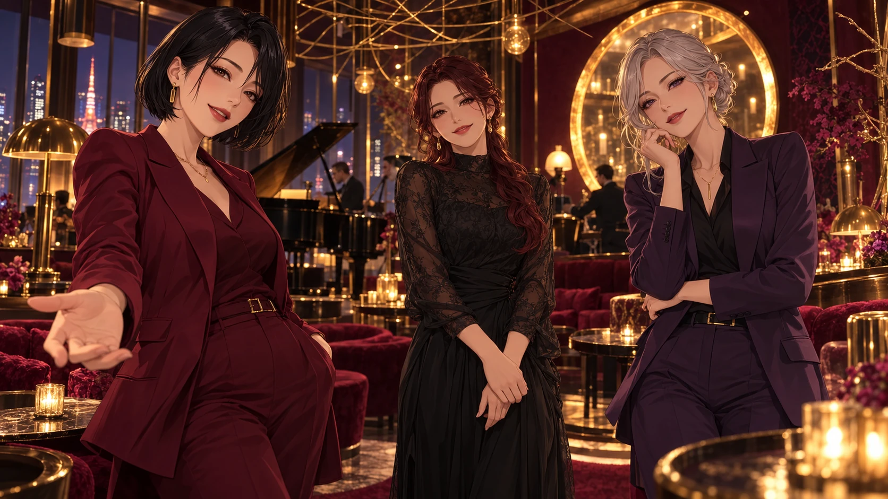

ПЕРСОНАЛЬНОЕ ПРИГЛАШЕНИЕ / БАХРАМ
ГОСТЬ № 026
ПОЗДРАВЛЕНИЯ ЗАКОНЧИЛИСЬ. НАЧИНАЕТСЯ ВЕЧЕР.ТЕБЯ
ТЕБЯ
ПРЕДУПРЕЖДАЛИ.
Три встречи. Никаких случайных реплик.
Сегодня на вопросы отвечаешь ты, Бахрам.
РЕЙНА
ХОЗЯЙКА ВЕЧЕРАВЫБИРАЙ ОТВЕТ. ОНА ОТРЕАГИРУЕТ.СЕГОДНЯ ВНИМАНИЕ — ТЕБЕ.
ИМЕНИННИК ПРОШЁЛ ФЕЙСКОНТРОЛЬ.ТЫ РЕДКИЙ
ТЫ РЕДКИЙ
ЭКЗЕМПЛЯР.
С твоими планами, приколами и легендарным «ок».
И рядом есть человек, который знает всё это
и всё равно говорит: «Мой лучший друг».
С днём рождения, Бахрам.
Пусть дальше будет что вспомнить.